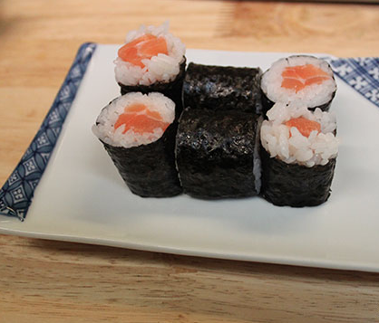
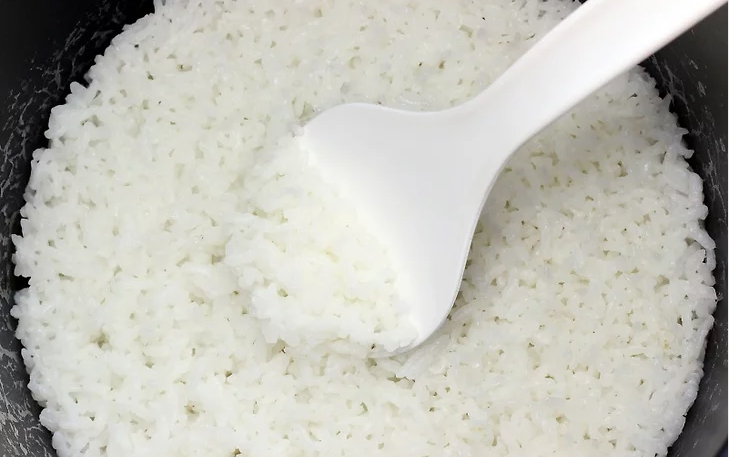

How to Make Sushi

So you want to learn to make sushi? Follow these slides, gather your ingredients and lets begin! Use the knives to the right to navigate the slides.

Step 1 : Gather Your Ingredients and Prep the Rice

You will need : several sheets of yaki nori (dried seaweed), a bag of short grain sushi rice, fresh sushi grade salmon, rice vinegar, salt and sugar. Cook 2 cups of rice in a pot or rice cooker based on the instructions on the package. After it is cooked let it cool for 30 min under room temperature. Combine a teaspoon each of the rice vinegar, sugar, and salt in a small bowl before mising it into the rice.
Third Slide